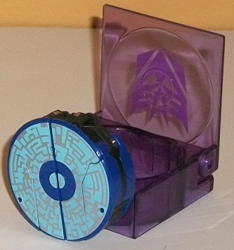
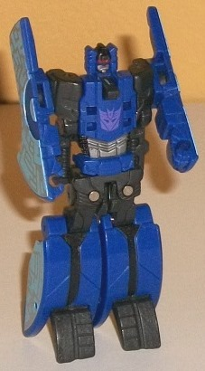
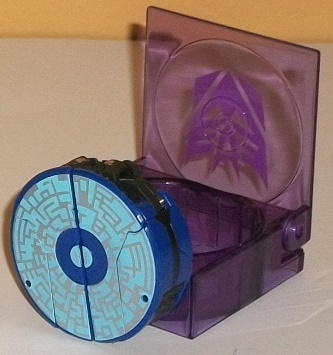
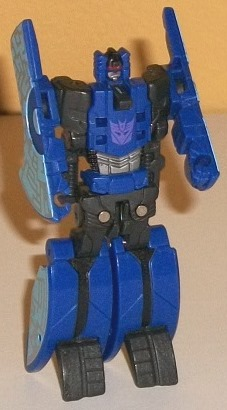
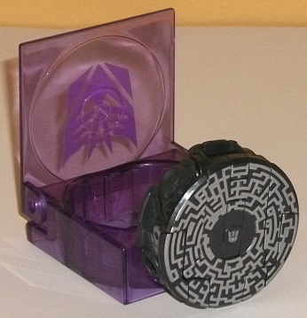
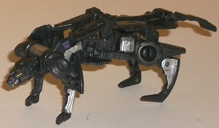

 
Difficulty of Transformation: Very Easy
Color Scheme : Dark blue, silver, charcoal black, and some red and light sky blue
Individual Rating : 7.2
Allegiances
: Decepticon
Size
: Legends 2-pack
Overall Rating:
6.5
 Decepticon
Rumble
Decepticon
Rumble


Difficulty of Transformation:
Very
Easy
Color Scheme
: Dark blue, silver,
charcoal black, and some red and light sky blue
Individual Rating
: 7.2
Sorry "FIBRIR" fans--
THIS version of Rumble is most definitely blue. In data disc mode, he's
a rather striking shade of dark blue, and the mix of light blue and silver
"circuitry patterns" on the top of said mode looks fantastic and contrasts
excellently with Rumble's blue. Like other FoC data disc toys, he doesn't
have much play value in this mode, but he's meant to interact with one
of the
voyager FoC Soundwave
variants--
that's his main play value here, is storage. The disc is, like the other
FoC disc toys, rather fat, but this is necessary in order to get a robot
out of it, obviously, and it's the same thickness as the other FoC discs,
so no real issue there. Near one end of this mode Rumble's split-in-half
waist makes itself slightly obvious from a side view, but otherwise this
is a pretty solid mode. Like the other disc toys in these 2-packs, Rumble
comes with his own "carrier cartridge"-- transparent purple with a light
purple Decepticon symbol, appropriately enough.
Rumble's robot mode--
like the other FoC data disc toys-- converts from his disc mode with the
pressing of a small button, though you have to fold back his parts in the
right manner to get them all to "click" back into disc mode. His gimmick
works when Soundwave "ejects" him about half of the time, which isn't too
bad, I guess-- and even if it doesn't automatically work before Rumble
hits the ground, again, just press the button on his back and BAM, it's
done. Given his spring-loaded, tiny nature, Rumble doesn't have much when
it comes to articulation. He can move back-and-forth at the shoulders,
and his toes have slight movement, as well. Technically you can move him
inwards at the shoulders, backwards at the knees, and sideways at the hips,
as well-- but these are all spring-loaded joints, so as soon as you let
go they'll pop back into their default position. That said, articulation
really isn't the point of these little guys, it's all about the awesome
auto-transforming gimmick and their interaction with the variations of
the FoC Soundwave mold, so this lack of articulation doesn't bug me as
much here as it would on most other toys. The mold detailing on Rumble
is pretty decent and "Fall of Cybertron-y", with alternating parts of dense
detailing (like his head and chest) and parts of sparser mold detailing,
like his legs. Generally he looks pretty nice and accurate to his FoC design
(minus the pile-drivers), though his head details tend to blend together
a bit in a slightly ugly manner. Color-wise, charcoal black becomes more
obvious in this mode, but it doesn't really add much to the color scheme
beyond making it a bit less one-tone. There's a few silver & red paint
apps on his chest and head, but largely all his "pretty" paint apps were
used in disc mode.
Rumble has a great shade
of blue, and his data disc mode paint apps in particular look great. Like
all FoC disc toys, he doesn't have much articulation, and I wish his gimmick
worked upon "ejecting" him from Soundwave more often, but overall he's
one of the better FoC data disc molds, and my favorite version color-wise
of this mold in particular.
 Ravage
Ravage


Difficulty of Transformation
: Very
Easy
Color Scheme:
Charcoal black and
silver and some metallic bronze
Individual Rating
: 5.7
Ravage is another of
the data disc 'Cons, and his disc mode is pretty much what you'd expect;
a black disc that's the same shape as the other FoC data disc toys. The
silver circuitry detailing on the top looks pretty ace, though it's not
quite as impressive as many of the other data discs' circuitry patterns
(though that's admittedly a high bar to jump over). What DOES bother me
about this mode is that the sides of the data disc aren't nearly as "solid-looking"
as on most of his other disc brethren; you can see bits like hips, paws,
and shoulders quite obviously on the sides, with the "lip" of the disc
coming out over some of these parts in a rather unattractive manner. As
usual, Ravage doesn't really have play value in this mode, and is meant
for storage inside a FoC Soundwave variant's chest cavity in this configuration.
Like other data disc Legends 2-pack figures, Ravage comes with his own
"cartridge" to hold him in this mode, if you don't feel like putting him
into a FoC Soundwave mold's chest (or don't have said toy); just like with
his packmate Rumble, his holder cartridge is transparent purple with a
light purple Decepticon symbol emblazoned on the top of it.
Like with the other
FoC data discs, pressing a button on Ravage's back should automatically
transform him to beast mode, though to get him back into disc mode you
have to manually bring the parts back together into the disc shape until
you hear a "click" that signifies everything's in place. Unfortunately,
Ravage's auto-transformation barely ever works completely, particularly
when firing him from Soundwave. Even when you press on the button on the
disc's back yourself, you have to usually manually unfold Ravage's back
legs and his back and tail. This kind of takes a fair bit away from the
"auto-transformation" gimmick, but it would be a bit more forgiveable if
Ravage's beast mode looked really awesome-- unfortunately, it doesn't.
It's quite misproportioned, with an overly small head and a very overly-long
body. Plus, his back pieces and tail don't connect in any visual way to
his lower body, and the visual gap in between them looks just plain ugly.
His legs are also a bit too short, though Ravage does have slightly more
articulation than your average disc TF due to them-- he can move at the
top and mid-section of his back two legs, at the mid-section of his front
two legs, and his tail can move up-and-down, too. His front two legs can
also rotate upwards where they meet the main body, but they're spring-loaded
and will snap back into their default position as soon as you let go of
them. Ravage's color scheme-- though admittedly accurate-- is pretty boring
here, with most of the silver hidden in this mode and the "impure" charcoal
black making for a rather blah main color. Much of his mold detailing seems
off, too-- his head doesn't look long enough and has rather ugly mold detailing
(though his bronze eyes look great). His back has some decent enough mold
detailing on it, though much of it is hidden due to the black plastic.
Most of his other parts tend to have minimal detailing on them due to his
transformation and overall design, though the silver paint on his lower
legs is appreciated.
Ravage is definitely
the weakest of the FoC data disc molds, with a less-than-solid data disc
mode, a fairly straightforward and boring color scheme, and a beast mode
that is-- quite frankly-- a bit of a mess, both in terms of design and
its overall proportions. Add that his automatic transformation doesn't
work a pretty good majority of the time, and this would be an easy pass
if it weren't... y'know, Ravage.
The Ravage/Rumble set is a bit of a mixed bag. Rumble has a beautiful color scheme and paint apps and is pretty decent for a FoC data disc toy, but Ravage ranges from "merely okay" to "pretty bad" depending upon which mode he's in and has a pretty boring color scheme to boot. However, there's something to be said about having a Soundwave toy without his companion Ravage; many will want this two-pack simply to give FoC Soundwave more companions, and I totally get it. Just don't expect much out of Ravage-- and if you aren't planning on getting a voyager FoC Soundwave or one of its variants, these guys probably aren't worth picking up regardless, given how strongly their gimmick needs a "host 'bot" to work with to get the most out of them.
Reviews by Beastbot